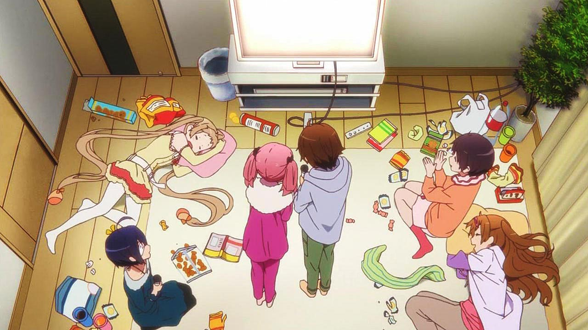
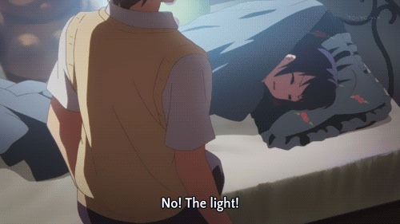

How To Nap |
||
Your guide to a better nap:Be tired!It may be hard for some to nap when they are not tired, although some people have no problems in this area. If you're having trouble napping at first, a good trick is to make sure you're tired! Once you set yourself up on a napping routine, it will be easier and you'll be able to sleep as you normally do at night. Tricks to getting yourself tired are good for the days before an upcoming competition as well. Obviously a good first 'trick' is to just stay up as late as you can, while still waking up at your normal time. Hanging out with friends, playing video games, eating junk food, and drinking sugary caffeinated soda can help keep you up.
|
|
 Find a good environment!Some people can nap anytime, anywhere. Maybe you can and maybe you can't. If you're having problems napping at first, perhaps you need to try some different tactics. More or less light, more or less white noise, etc. Find what works for you and stick with it! |
Get yourself tired!Not only do you want to be tired, but you always want to get yourself tired and stay tired! It is recommended that if you don't already exercise, to start. If you push yourself hard enough, you wont have to try to nap, it'll happen all on its own! It's also good to avoid caffeinated drinks during the day, if you want to nap often. And the more often you nap, the better you'll feel, and the more fun you'll have! |
||